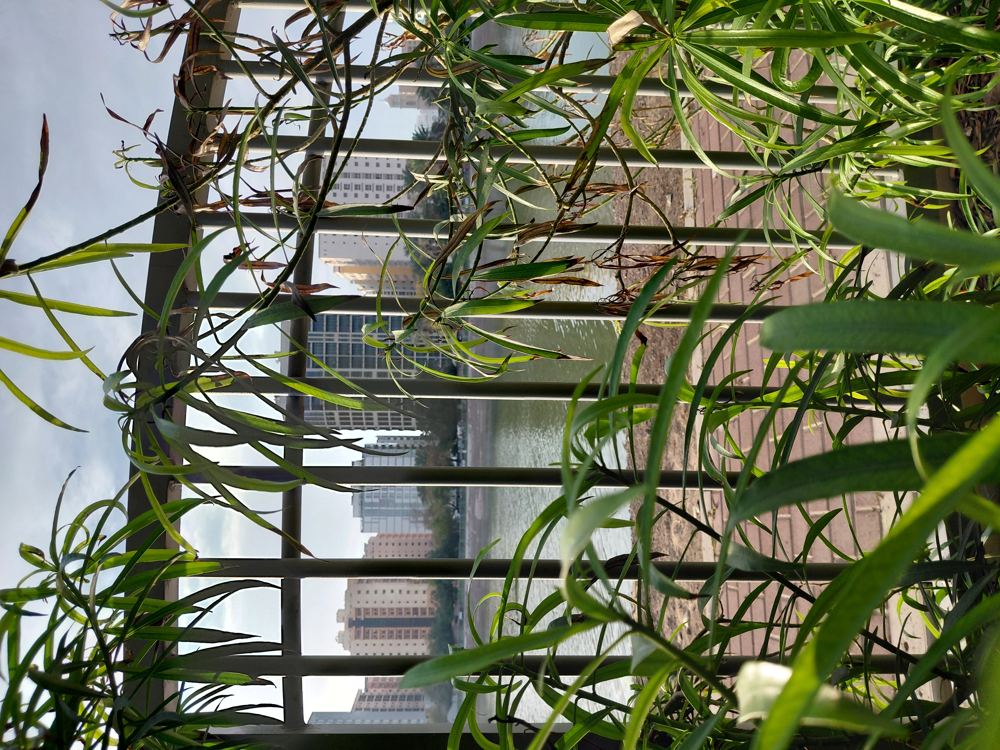
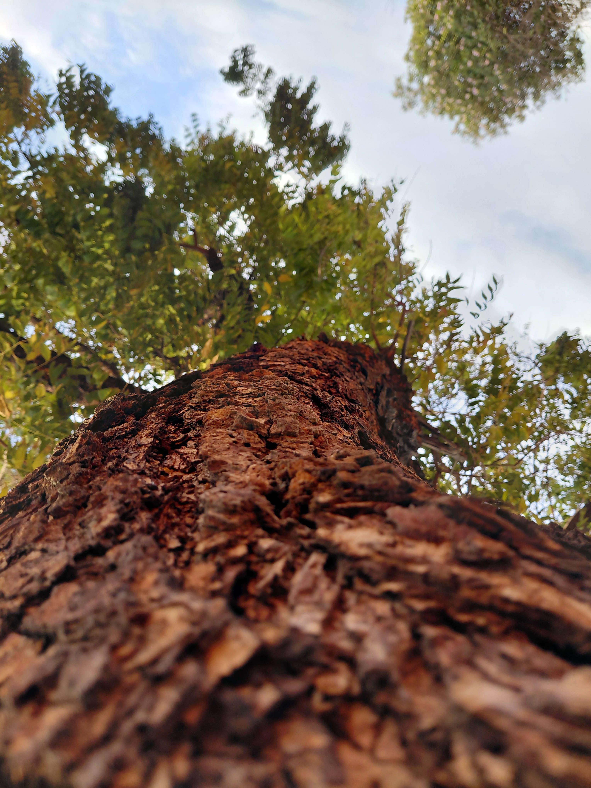
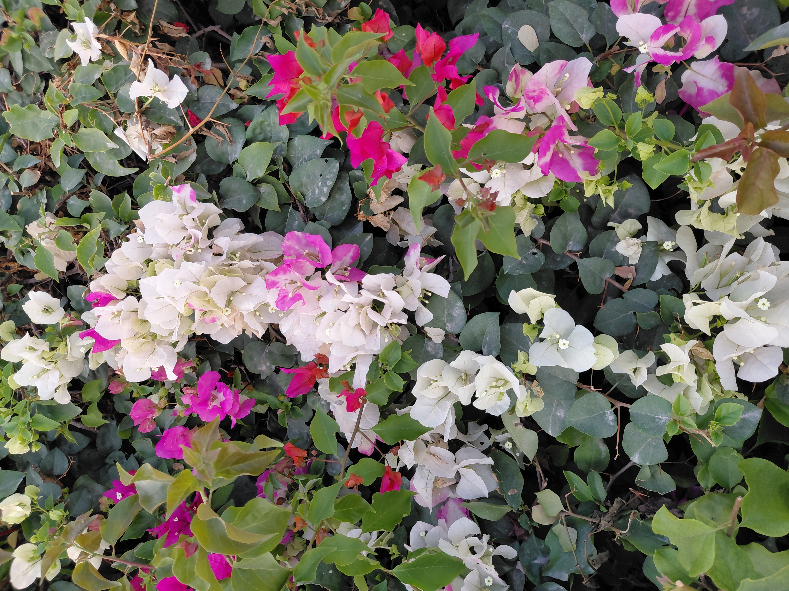
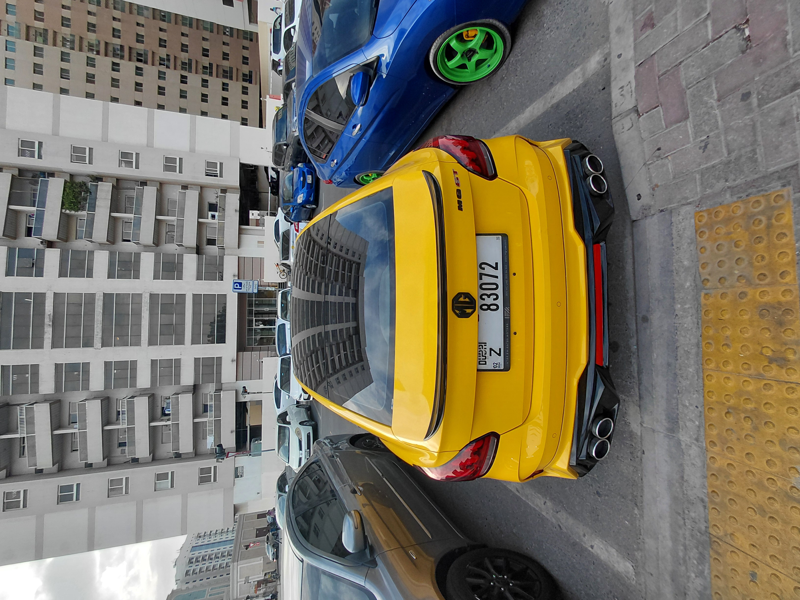

← back to home
a walk in the park • march 2026
I went for a walk in the park the other day.
It was nice. I hadn't gone to the park in a while.
I felt like a toddler consciously experiencing the outdoors for the first time, and it was honestly kind of beautiful. Every little thing I saw made me happy.
It had me thinking about life. There's a lot of uncertainty and it's really scary, but it's also kind of exciting.
With the impending peril of A-levels and university decisions on the horizon, there's a lot that could happen. I'm not sure what the right next step for me is, but that's okay.
Maybe life's just a walk in the park.
~Aly
12/03/2026






miscellaneous afterthoughts —
- i included the photo of the yellow car above because i thought it looked cool but a photo of a car in a 'car park' is technically still a photo taken in a 'park'.. right..? im sure there's something to be said here about how cars have taken over our cities and even our langauge or something idk
- making the vines for this page were fun, i think ill experiment with adding more fun visual elements in future journal entries :)